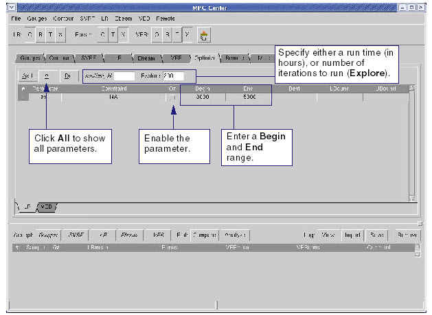

Set optimization
options in MPC Center for the Long Range model.
Procedure
- Click the Optimize tab.
In the Optimize page, click the LR sub-tab
(see Figure 1).
Figure 1. Optimize Tab (LR Sub-Tab
Displayed) 
- In the LR sub-tab in the Optimize
page, click All to see
all the parameters in the gauge file.
- Enable the parameters you
want to optimize clicking the radio button in the On column.
- Set lower and upper bounds
by entering Begin and End ranges for your enabled
parameters.
- Set either the number of iterations
to run in the Explore field,
or a run time value in the Runtime field
(the H stands for number
of Hours).